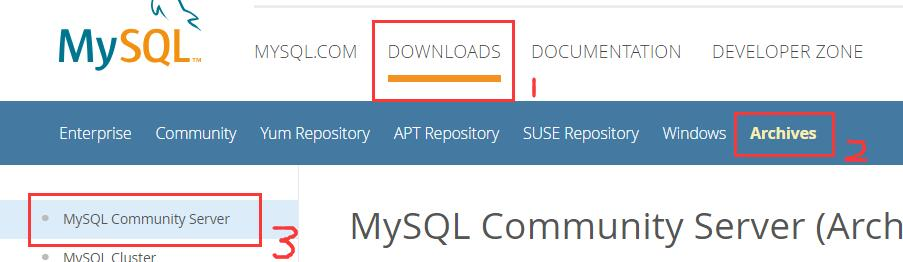
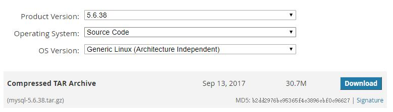
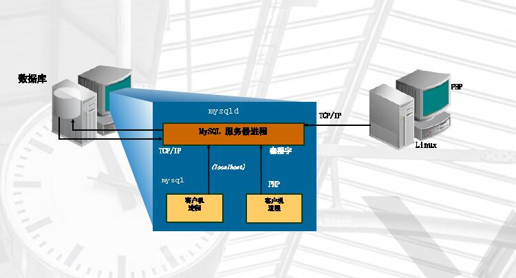
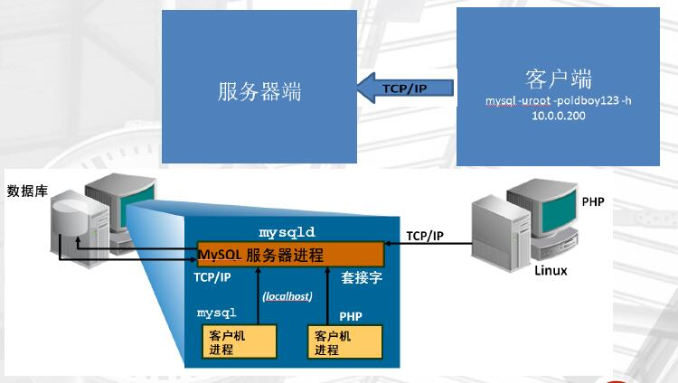
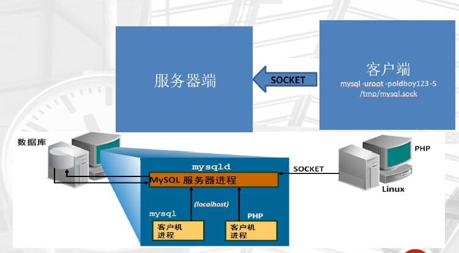
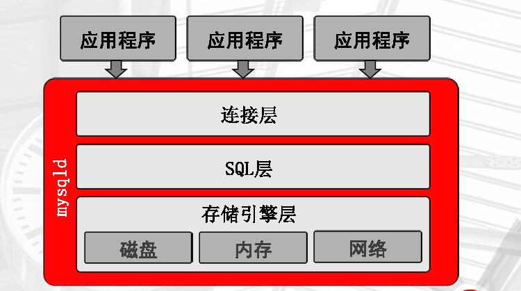
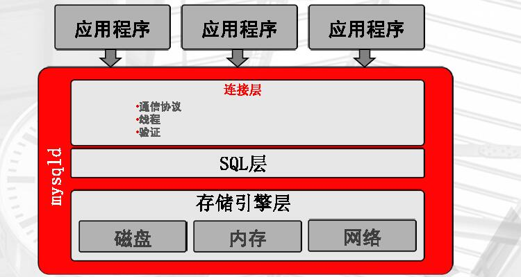
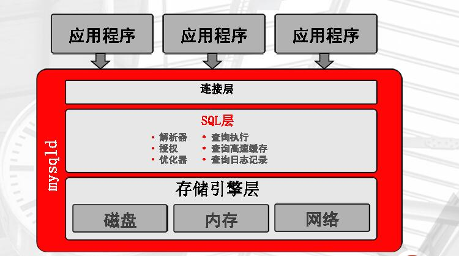
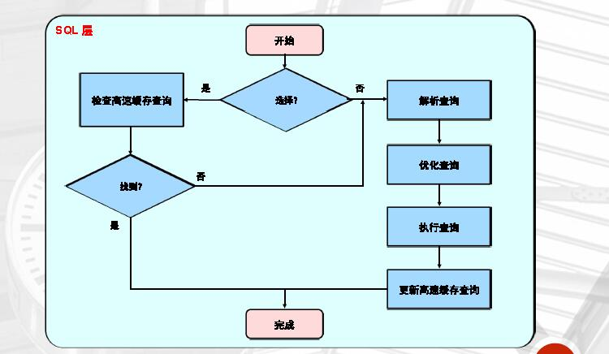
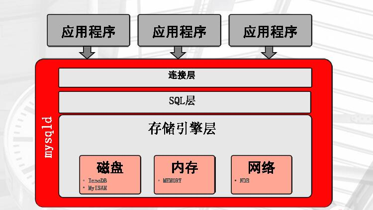

目录
数据库的分类
> 关系型数据库管理系统（RDBMS）
典型代表有：Oracle、mysql、mssql（SQL Server）、PG（postgresql）
数据安全性要求较高的应用场景
> 非关系型数据库管理系统（NOSQL）
典型代表：redis、mongodb、memcache、Hbase、neo4j
针对性能要求较高，数据安全性要求不是太高的场景，一般是配合RDBMS使用的产品
mysql版本的选择
> mysql下载
> www.mysql.com---->DOWNLOADS---->Archive---->MySQL Community Server


> 选择源码包(mysql-5.6.38.tar.gz)，进行编译安装
版本选择：
5.6 —–>5.6.36 5.6.38 ，GA版稳定发布的版本数选双数（36,38）6个月以上的版本
5.7 —–>5.7.17版本以上：5.7.18,5.7.20 ， GA6个月以上的版本
安装方式比较
RPM、YUM: 安装方便、安装速度快，无法定制 二进制： 不需要安装，解压即可使用，不能定制功能
* 编译安装：可定制，安装慢
5.5以前：通过./configture make && make install
5.5及之后：cmake(等同./configture) make &&make install
源码编译安装MySQL-5.6.38
### 依赖安装
1 | [root@db01 ~]# yum install -y ncurses-devel libaio-devel |
### 安装cmake
5.5及之后：cmake(等同./configture) make &&make install
1 | [root@db01 ~]# yum install cmake -y |
### 创建用户
为MySQL创建用户
1 | [root@db01 ~]# useradd -s /sbin/nologin -M mysql |
### 编译安装
解压、切换目录到解压后的目录
1 | [root@db01 ~]# cmake ./ -DCMAKE_INSTALL_PREFIX=/application/mysql-5.6.38 \ #安装目录 |
MySQL服务器的构成
客户端与服务端模型 –c/s

MySQL的连接方式
- 通过TCP/IP协议进行连接，主要用来供客户端远程连接
1
[root@db01 ~]mysql -uroot -p123 -h 127.0.0.1 -P 3306
- 通过本地套接字连接，主要程序与mysqlserver处于同一台机器，发起本地连接时用的
1
[root@db01 ~]mysql -u root -poldboy123 -S /application/mysql-5.6.38/tmp/mysql.sock
实例
MySQL的特点是：
- 程序启动会以守护进程的方式在后台运行，并生成工作线程
- MySQL运行时会预先分配内容空间，而不是临时分配
故：实例=MySQL的后台进程+线程+预分配的内存结构 - 数据库系统=实例+数据
说明：mysqld是mysql程序（守护进程）启动的脚本。但它不能自启动
mysql程序构成
MySQL的三层结构：

- 连接层

提供客户端连接数据库的协议
对用户登录数据库进行相应的密码验证
生成连接线程
- SQL层

处理SQL语句
验证SQL语句语法的合法性（正确性）
判断SQL语句的语意，（是属于增删改查的哪一个）
查询缓存一些经常的数据
通过相应的解析器解析成执行计划
优化器按照mysql的处理方式处理SQL语句
执行查询，获得磁盘数据的的获取方式
流程处理

- 存储引擎层

和磁盘直接打交道
获取16进制的数据
将数据返回到SQL层
SQL层会生成相应的表格供用户查看